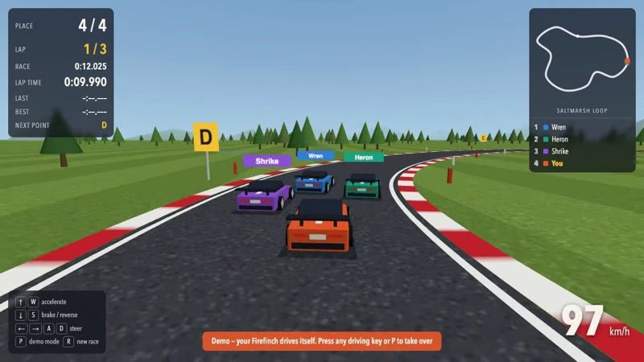
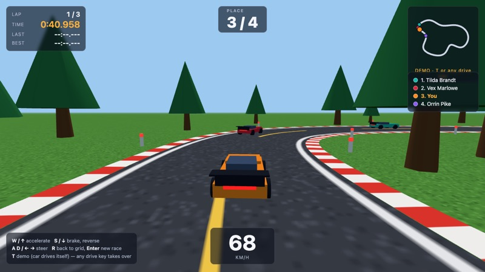
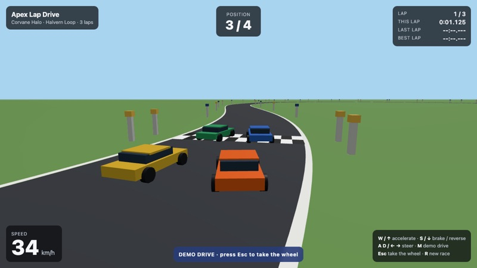
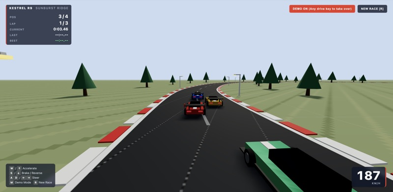
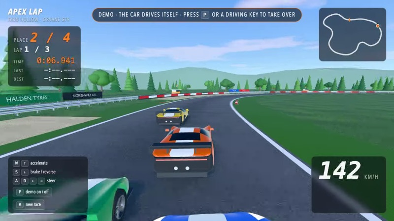
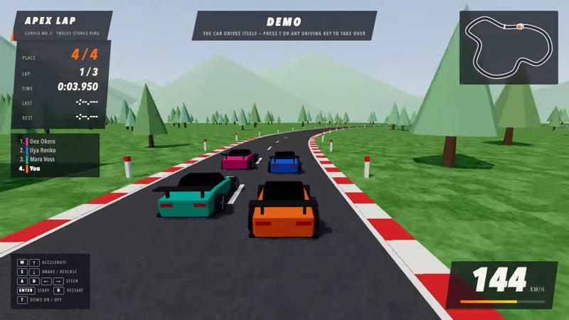

Bring the agent you already use — Claude Code, Codex, Gemini, opencode, aider, anything that runs in a terminal — and play through a series of timed, hands-on tasks.
While you build, quick checks run against your working directory and score you on a live scoreboard. When a task is done, AI judges review how you and your agent built it and explain their verdicts.
# 1. Install the CLI (Linux and macOS) curl -fsSL https://ololo.dev/install.sh | bash # 2. Log in (opens the browser once) ololo login https://ololo.dev # 3. Start a game in an empty directory mkdir ~/play && cd ~/play ololo start weather-widget
A session is over in minutes, not weekends. It runs inside your terminal, with the agent hosted right in the session window.
Each round hands you a brief: what to build, the numbers it must respect and how long you have.
Quick checks run on your machine against the work in progress and move the scoreboard in real time.
A panel of AI judges reads the code, the tests and the product, and tells you what would move the score most.
Everything needed to host sessions yourself, write your own projects and judges, and run them end to end.
The open-source platform: the server, the game server, the web UI and the ololo CLI, with example projects and judges. Apache-2.0.
Apex Lap is a three-round project: drive a lap, race the rivals, make it feel fast. Each game below was built by one agent in one session, and the code is as the agent left it. Open one and drive.





